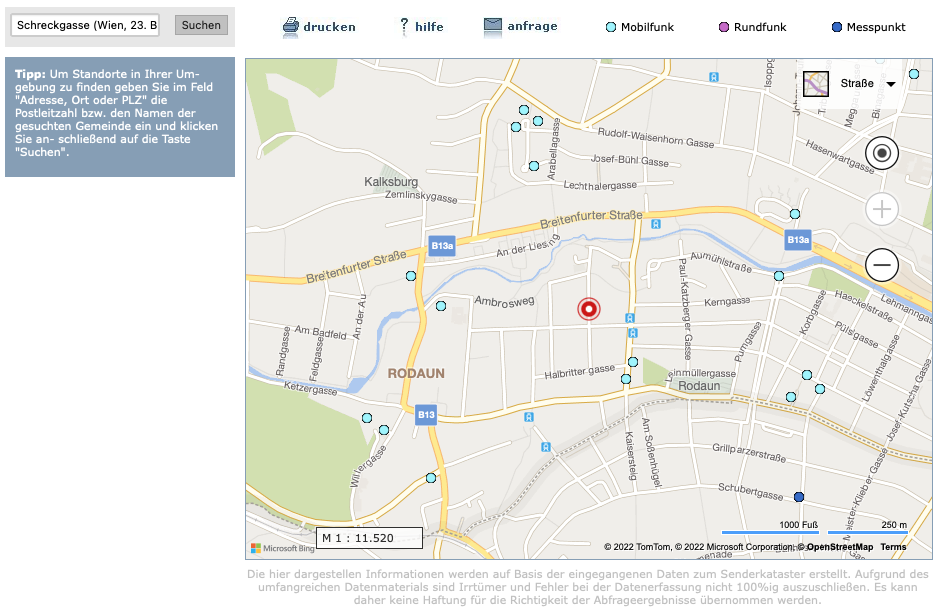

Hallo Magenta-Community,
Ich habe seit einiger Zeit folgendes Problem:
Als die Outdoor-Box vor einigen Wochen montiert wurde hat sie ein schwaches, aber doch vorhandenes 5G Signal geliefert (Nur bei Starkregen ist das Signal verloren gegangen, wurde aber auch wieder gefunden) - auch 200-250 MBit waren wie im Vertrag vereinbart 24/7 verfügbar.
Jetzt findet die Box kein 5G-Signal mehr und nur noch das LTE Netz (Versuche wie die Box nur auf 5G zwingen etc. haben nicht geholfen). Hin und wieder taucht das Signal für wenige Sekunden auf, nur um dann gleich wieder zu verschwinden. Das LTE Signal liefert unter Tags mit Glück 100 MBit, zur Rushhour zwischen 17 und 22 Uhr geht die Versorgung aber auch gerne auf unter 30 MBit. Gerade eben (Sonntag, 16:40) wurden 7,8 MBit gemessen - was bei dem Vertrag eigentlich eine Zumutung ist - vor allem in einem Mehrpersonenhaushalt.
Ich habe leider bis jetzt nicht herausfinden können welcher 5G Sender von Magenta der nächste zu mir ist da auf https://www.senderkataster.at nicht eingetragen wird welchem Anbieter der Sendemast gehört. Dann könnte ich versuchen meine ODU noch besser/optimaler zu platzieren. Mein Standort entspricht ziemlich genau dem Roten Punkt auf der Karte.

Die erste station südlich von mir behauptet 5G zu haben (allerdings weis ich nicht welcher Anbieter und würde da das Signal nicht mehr ankommt Magenta ausschließen). Kann mir da jemand helfen wie man herausfinden kann wo Magenta seien 5G Türme versteckt hat? Dann könnte ich versuchen meine Antenne besser auszurichten.
Vielen Dank für Eure Hilfe und beste Grüße!
Hey
@Moonwalker
Der 5G Sendemast südlich ist von A1
Der nächste 5G Sendemast von Magenta dürfte beim Fridtjof-Nansen-Park sein.
Genauer gesagt auf dem Gemeindebau südöstlich der Kreuzung Lodrongasse/Rudolf-Zeller-Gasse
LG NTM
vor 2 Stunden schrieb NTM:Hey @Moonwalker
Der 5G Sendemast südlich ist von A1
Der nächste 5G Sendemast von Magenta dürfte beim Fridtjof-Nansen-Park sein.
Genauer gesagt auf dem Gemeindebau südöstlich der Kreuzung Lodrongasse/Rudolf-Zeller-Gasse
LG NTM
Vielen Dank für die Info. Wie hast Du herausgefunden dass der von der Magenta ist? Gibt es da eine eigene Karte?
LG Moonwalker
{kind=link}